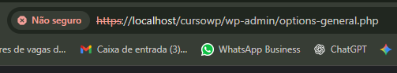
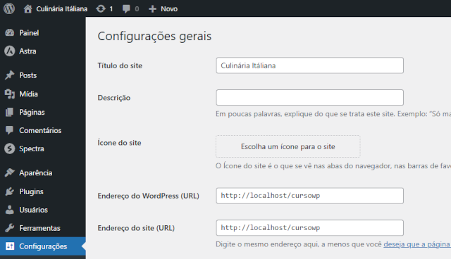

Como corrigir esse erro?

O WordPress está tentando forçar uma conexão segura (HTTPS), mas o seu navegador não confia no certificado do seu servidor local.
A solução mais rápida e eficiente é reverter essa alteração diretamente no banco de dados do seu WordPress.
🛠️ Passos para Corrigir o Erro de HTTPS no Localhost
Você precisará acessar a interface de gerenciamento do seu banco de dados (geralmente phpMyAdmin, Adminer, ou a ferramenta nativa do seu ambiente local, como XAMPP ou Local by Flywheel).
1. Acesso ao Banco de Dados
Abra o painel de controle do seu servidor local (XAMPP, WAMP, MAMP, etc.).
Inicie o servidor Apache e o servidor MySQL.
Acesse a ferramenta de gerenciamento do banco de dados (normalmente digitando http://localhost/phpmyadmin no navegador).
Localize e clique no banco de dados que seu WordPress (cursowp) está utilizando.
2. Edição da Tabela wp_options
Dentro do seu banco de dados do WordPress:
Procure e clique na tabela chamada wp_options (ou SEU_PREFIXO_options, se você tiver mudado o prefixo, mas geralmente é wp_options).
Nesta tabela, você precisa localizar e editar as duas primeiras linhas, que definem a URL principal do site:
Pela imagem que você enviou (image_907183.png), está claro que o erro ocorreu ao tentar acessar o endereço https://localhost/cursowp/wp-admin/options-general.php e o navegador está mostrando o aviso "Não seguro" e bloqueando o acesso.
Você está absolutamente correto: esse erro acontece porque você alterou de http para https em um ambiente de desenvolvimento local (localhost) que não possui um certificado SSL válido.
O WordPress está tentando forçar uma conexão segura (HTTPS), mas o seu navegador não confia no certificado do seu servidor local.
A solução mais rápida e eficiente é reverter essa alteração diretamente no banco de dados do seu WordPress.
🛠️ Passos para Corrigir o Erro de HTTPS no Localhost
Você precisará acessar a interface de gerenciamento do seu banco de dados (geralmente phpMyAdmin, Adminer, ou a ferramenta nativa do seu ambiente local, como XAMPP ou Local by Flywheel).
1. Acesso ao Banco de Dados
Abra o painel de controle do seu servidor local (XAMPP, WAMP, MAMP, etc.).
Inicie o servidor Apache e o servidor MySQL.
Acesse a ferramenta de gerenciamento do banco de dados (normalmente digitando http://localhost/phpmyadmin no navegador).
Localize e clique no banco de dados que seu WordPress (cursowp) está utilizando.
2. Edição da Tabela wp_options
Dentro do seu banco de dados do WordPress:
Procure e clique na tabela chamada wp_options (ou SEU_PREFIXO_options, se você tiver mudado o prefixo, mas geralmente é wp_options).
Nesta tabela, você precisa localizar e editar as duas primeiras linhas, que definem a URL principal do site:
Campo (option_name) Valor Atual (option_value)
siteurl https://localhost/cursowp
home https://localhost/cursowp
3. Revertendo para HTTP
Edite a linha onde o campo option_name é siteurl.
Mude o option_value de https://localhost/cursowp para http://localhost/cursowp.
Edite a linha onde o campo option_name é home.
Mude o option_value de https://localhost/cursowp para http://localhost/cursowp.
Salve as alterações (geralmente clicando em "Executar" ou "Salvar").
4. Teste Final
Feche e reabra seu navegador.
Tente acessar seu painel de administração novamente, usando a URL HTTP: http://localhost/cursowp/wp-admin/.
Se você reverteu as URLs corretamente no banco de dados, o WordPress voltará a carregar corretamente e o erro de "Não seguro" e bloqueio desaparecerá, pois ele não estará mais tentando forçar o HTTPS sem certificado.
Se tudo der Certo

Agora você deve conseguir acessar o painel de administração do WordPress sem problemas.